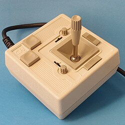

Why?
As computers shifted from batch processing text to interactive operating systems, text-only keyboards were no longer enough. Users needed a way to point, click, and interact spatially.
- The Invention of the Computer Mouse (1964)
- Douglas Engelbart's Prototype: Created at the Stanford Research Institute, the first mouse was a carved wooden block containing two perpendicular wheels that tracked movement across a 2D surface.
- Commercial Adoption: Popularized commercially by Xerox PARC in the 1970s and later brought to the mainstream by Apple with the Macintosh in 1984.
- Joysticks, Trackballs, and Alternative Controls
- Joysticks: Adapted from aviation controls, they became essential for arcade cabinets and early home video game consoles.
- Trackballs: Offered an inverted mouse design where the user rolled a stationary ball with their fingers, saving desk space in industrial and military settings.
How did they look back then ?



How do they look like now ?


Sources
- Article by CHM (computer history museum). link to the article
- Article by WikiPedia. link to the article
- Article by SRI. link to the article